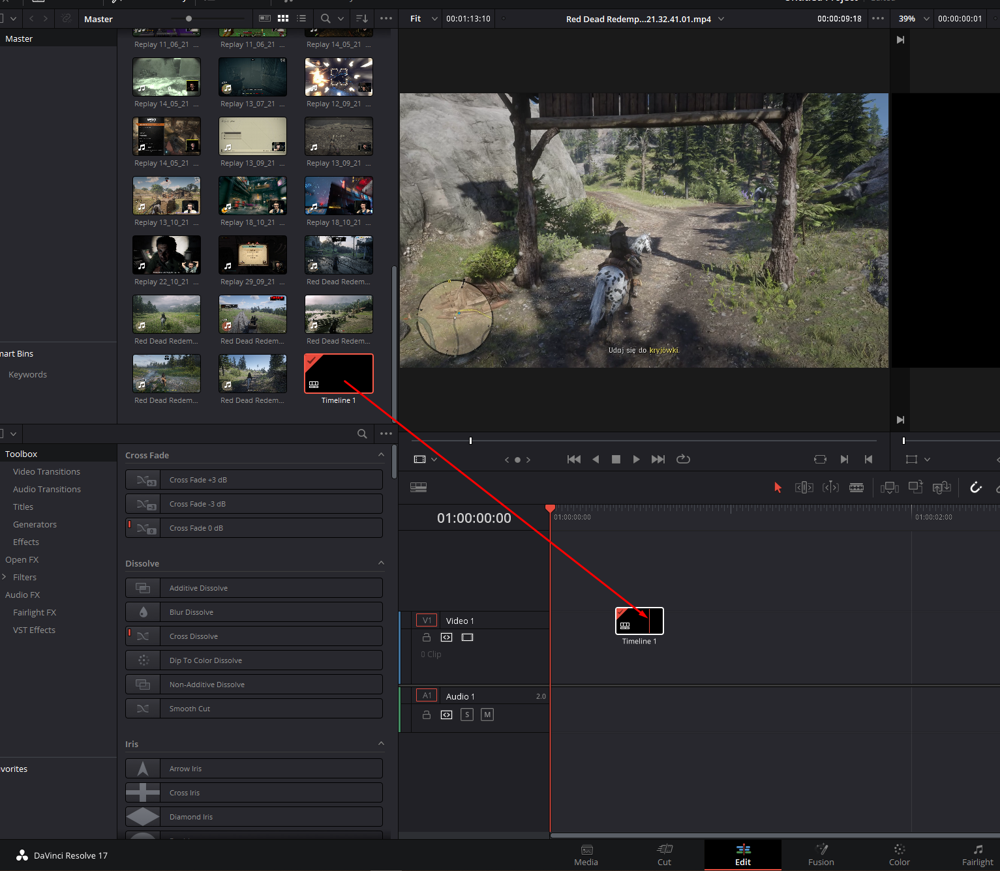

Getting started
Why is it different?!
At first editing in DaVinci Resolve after being used to Adobe Premiere it may feel awkward to cut media imported on the timeline. Many tools' icons look exactly like in Premiere, but their functionality has minor differences that are annoying when you're just starting.
Introduction
Skip introThere are couple of ways of cutting imported media.
First, you need to select the edit tab.

Drag media from media pool into timeline
Your timeline should end up looking like this